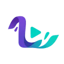
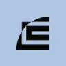
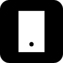

DescriptYouTube и блогинг
Descript связывает монтаж аудио и видео с текстовой расшифровкой. Позволяет менять запись через её содержание, обрабатывать звук и готовить короткие версии материала.
YouTube и блогинг: Начните с темы и аудитории. Сравните работу со сценарием, субтитрами и экспортом в нужный формат площадки.
Перед съёмкой соберите короткий сценарий из одного вопроса аудитории. Молекула поможет распределить объяснение по сценам и отметить, где нужен наглядный пример на экране.
Зрители спрашивают, как выбрать настольную лампу. Составь сценарий трёхминутного видео: сравнение освещения, демонстрация регулировок, критерии выбора. Характеристики моделей я добавлю после проверки.

Descript связывает монтаж аудио и видео с текстовой расшифровкой. Позволяет менять запись через её содержание, обрабатывать звук и готовить короткие версии материала.

Liminal AI рассчитан на задачи, где нужно собирать видеосцену по описанию или визуальному исходнику. Ещё одно направление работы: готовить материалы о товарах и услугах.

Luma Dream Machine относится к творческой среде Luma для подготовки и доработки визуальных материалов. Подходит для разработки сцены и согласования вариантов в контексте проекта.
Morise помогает авторам YouTube готовить названия, описания и теги роликов. Инструмент также предлагает темы будущих видео и средства подготовки сообщений для сообщества. Его назначение связано с оформлением и планированием публикаций: текстовая работа над видео дополняется идеями, но не подтверждает будущие просмотры или поисковую позицию.

В инструменте «MPCard.ai» можно собирать видеосцену по описанию или визуальному исходнику. Ещё одно направление работы: готовить видеоматериалы для публикации.
Для «Playphrase.me» сначала определите свою задачу и требуемый результат. Карточка относится к направлению «YouTube и блогинг».
Swell AI используют, чтобы собирать видеосцену по описанию или визуальному исходнику. Ещё одно направление работы: сокращать материал до основных положений.

VEED.IO объединяет браузерный видеоредактор, субтитры и инструменты ИИ для создания материала. Подходит для оформления коротких публикаций и обработки готовой записи.
Vidfly относится к инструментам, которые помогают собирать видеосцену по описанию или визуальному исходнику. Ещё одно направление работы: готовить видеоматериалы для публикации.
Сравнивать «AskVideo» с другими инструментами раздела «Чат-боты и ассистенты» удобнее на одинаковом исходном материале.
Autoblogging.ai относится к инструментам, которые помогают готовить текст по теме и требованиям к содержанию. Ещё одно направление работы: редактировать уже написанный материал.
«GPT-AdBlocker» представлен в разделе «YouTube и блогинг». При выборе проверьте нужную операцию и условия работы с результатом.

Hailuo AI помогает создавать короткий видеоматериал по задумке или изображению. При просмотре важно оценивать действие целиком, а не только удачный первый кадр.

HeyGen создаёт видео с говорящими аватарами и помогает переводить ролики. Качество рабочего материала зависит от сценария, произношения и согласованного использования лица и голоса.
В инструменте «Makefilm» можно собирать видеосцену по описанию или визуальному исходнику. Ещё одно направление работы: сокращать материал до основных положений.
OpusClip используют, чтобы готовить видеоматериалы для публикации. Ещё одно направление работы: дорабатывать записанное видео.

Revid AI помогает превратить тему или подготовленный материал в ролик для публикации. Важны связность сценария, оформление кадра и итоговый формат экспорта.
VideoGen используют для задачи: собирать видеосцену по описанию или визуальному исходнику. Ещё одно направление работы: готовить видеоматериалы для публикации.
vidIQ помогает авторам разбирать развитие канала на YouTube через аналитику и тематические рекомендации. В наборе есть поиск ключевых слов, аудит канала и идеи новых видео. Инструмент объединяет планирование публикаций с оценкой имеющихся материалов, не гарантируя рост просмотров или дохода.

Bramework используют, чтобы редактировать уже написанный материал. Ещё одно направление работы: готовить текст по теме и требованиям к содержанию.

В инструменте «Castmagic» можно сокращать материал до основных положений. Ещё одно направление работы: готовить видеоматериалы для публикации.

Dubly.AI рассчитан на задачи, где нужно собирать видеосцену по описанию или визуальному исходнику. Ещё одно направление работы: готовить видеоматериалы для публикации.
Flowjin относится к инструментам, которые помогают собирать видеосцену по описанию или визуальному исходнику. Ещё одно направление работы: готовить видеоматериалы для публикации.
Google Flow Music используют для задачи: готовить музыкальную композицию по заданию. Ещё одно направление работы: собирать видеосцену по описанию или визуальному исходнику.
«Hotpot Youtube thumbnail maker» подготавливает миниатюру для видеопубликации. Дополнительно «Hotpot Youtube thumbnail maker» помогает подготовить персонализированный видеоматериал.
LTX Studio рассчитан на задачи, где нужно собирать видеосцену по описанию или визуальному исходнику. Ещё одно направление работы: готовить видеоматериалы для публикации.

MakeReels.ai используют, чтобы собирать видеосцену по описанию или визуальному исходнику. Ещё одно направление работы: готовить видеоматериалы для публикации.

Runway объединяет генерацию видео, преобразование кадров и творческие рабочие процессы. Начинать удобнее с конкретного плана сцены и требований к сохранению объектов.
Sorin рассчитан на задачи, где нужно собирать видеосцену по описанию или визуальному исходнику. Ещё одно направление работы: готовить видеоматериалы для публикации.
В инструменте «SOUNDRAW» можно готовить музыкальную композицию по заданию. Ещё одно направление работы: готовить видеоматериалы для публикации.

Synthesia помогает создавать видео с цифровыми ведущими, переводить материал и оформлять обучение. Начинать стоит с утверждённого сценария и способа проверки понимания.

Taja AI помогает авторам YouTube оформлять видеопубликации средствами ИИ. Инструмент работает с заголовками и описаниями, а также разделяет видео на сегменты. Аналитические сведения дополняют подготовку материала, позволяя рассматривать публикацию вместе с доступными показателями в ходе работы автора.

Vidgo AI используют, чтобы собирать видеосцену по описанию или визуальному исходнику. Ещё одно направление работы: готовить видеоматериалы для публикации.
Wisecut рассчитан на задачи, где нужно собирать видеосцену по описанию или визуальному исходнику. Ещё одно направление работы: готовить видеоматериалы для публикации.

Captions.ai используют, чтобы готовить видеоматериалы для публикации. Ещё одно направление работы: дорабатывать записанное видео.
«Clipchamp» создаёт видеоматериал по заданию. «Clipchamp» помогает подготовить персонализированный видеоматериал.

В инструменте «Crayo» можно собирать видеосцену по описанию или визуальному исходнику. Ещё одно направление работы: готовить видеоматериалы для публикации.
Deevid относится к инструментам, которые помогают собирать видеосцену по описанию или визуальному исходнику. Ещё одно направление работы: готовить видеоматериалы для публикации.

ElevenLabs превращает текст в речь и предлагает инструменты для работы с голосами. Подходит для озвучивания роликов и аудиоматериалов с проверкой произношения, темпа и условий использования голоса.
В инструменте «HitPaw Edimakor» можно собирать видеосцену по описанию или визуальному исходнику. Ещё одно направление работы: готовить видеоматериалы для публикации.
Klap используют для задачи: собирать видеосцену по описанию или визуальному исходнику. Ещё одно направление работы: готовить видеоматериалы для публикации.
Nextify.ai используют для задачи: собирать видеосцену по описанию или визуальному исходнику. Ещё одно направление работы: готовить видеоматериалы для публикации.
ProJourney AI рассчитан на задачи, где нужно собирать видеосцену по описанию или визуальному исходнику. Ещё одно направление работы: готовить видеоматериалы для публикации.

Supermeme.ai создаёт мемы по пользовательскому тексту с участием ИИ. В продукте доступны шаблоны, которые можно настраивать, и подготовка GIF-мемов. Поддержка разных языков дополняет выбор формы, позволяя связывать задуманный текст с нужным визуальным вариантом публикации автора.

Vidon.ai рассчитан на задачи, где нужно собирать видеосцену по описанию или визуальному исходнику. Ещё одно направление работы: готовить видеоматериалы для публикации.

Zeemo создаёт субтитры для видео и предоставляет средства их дальнейшей правки. Пользователь может работать с динамическим оформлением, переводить текст и редактировать субтитры группами. Дополнительные видеоинструменты служат для подготовки публикаций, где нужно сочетать исходный ролик с читаемым текстовым сопровождением на разных языках.

Avoma рассчитан на задачи, где нужно сокращать материал до основных положений. Ещё одно направление работы: обрабатывать голосовые обращения.

В инструменте «Cliptalk» можно собирать видеосцену по описанию или визуальному исходнику. Ещё одно направление работы: готовить видеоматериалы для публикации.
Страница 3 из 4